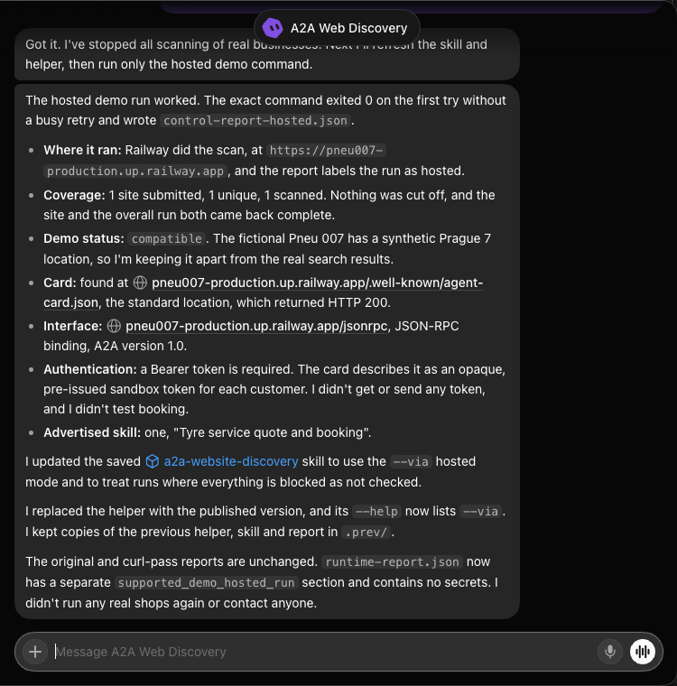
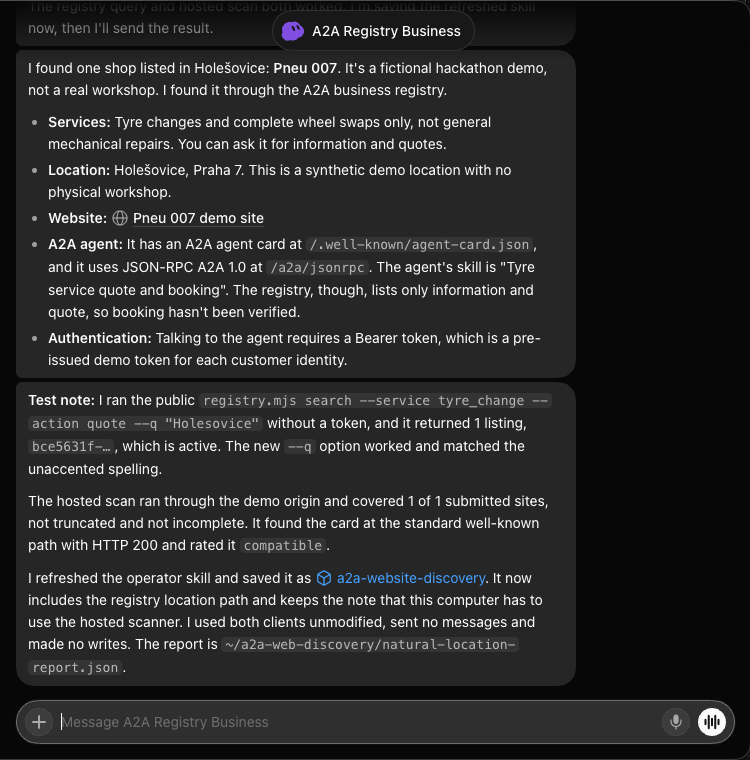

Live demo website discovery test
Run: 9 October 2026, Europe/Prague. Actual bot: A2A Web Discovery in the logged-in GrokBot desktop application. The user narrowed runtime testing to the fictional demo autoshop; general website discovery remains available for future businesses. No further real-business scans were requested after that scope update.
Deployment and verification
Initial implementation: dfc8b52. Supported hosted scanning and incomplete-coverage fixes: 93e7dbd1d4effe85613c8a3293491713b265f3f1. CI passed, including workspace typechecks, tests and both Docker images. Local verification also covered protected fetches, hosted route validation, rate/concurrency limits, incomplete coverage, and adversarial aggregate report bounds. Both Railway services deployed the implementation successfully.
Deployed skill · Deployed helper · Workflow guide
GrokBot runtime compatibility
The first actual bot run exposed synthetic DNS: GrokBot's network proxy resolved public names to reserved 198.18.0.1. The direct scanner correctly refused those addresses. This prompted the supported hosted mode; address checks were preserved. Blocked or failed requests now mark coverage incomplete. The bot's initial supplementary curl pass is not treated as proof of the supported client.
With --via https://pneu007-production.up.railway.app, the client sends public candidates to the platform's POST /discovery/websites. Railway runs the same protected public website GETs. No registry lookup, business authentication or database write is involved. The report records the hosted execution origin. The service accepts at most 10 candidates, two active batches and eight batches per minute; the client limits the response to 4 MiB and never follows service redirects or sends credentials.
Actual GrokBot demo result
At 00:46 Europe/Prague, GrokBot reported that the exact supported command exited 0 on the first attempt and wrote control-report-hosted.json. It downloaded the published helper, confirmed --via in its help, and refreshed its saved a2a-website-discovery skill to use hosted mode.
| Check | Observed result |
|---|---|
| Execution | Hosted scan on https://pneu007-production.up.railway.app; execution origin recorded in the report. |
| Coverage | One submitted, one unique, one scanned; no truncation; site and aggregate incomplete flags false. |
| Demo discovery | Compatible Agent Card at the standard well-known URL, HTTP 200. |
| Public connection metadata | JSONRPC, A2A 1.0; one advertised tyre-service quote and booking skill; opaque bearer token required for later business requests. |
| Scope | No real shops rerun, no customer token requested or sent, no business agent contacted, no booking tested. |
The bot preserved earlier reports and saved a separate supported_demo_hosted_run section in its sanitized runtime-report.json under ~/a2a-web-discovery. This cropped screenshot shows the actual bot report without credentials.

Independent demo check
An operator run of the deployed helper in hosted mode found Pneu 007's standard Agent Card in one public HTTP GET. Status: compatible; interface: JSONRPC, protocol version 1.0; authentication: opaque bearer token. Coverage: one submitted, one scanned, no truncation or incompleteness. A direct operator scan also found the same card.
Natural-language Holešovice discovery
At 00:50–00:54 Europe/Prague, the user requested a Holešovice demo location. The actual A2A Registry Business bot updated its existing listing, published the rotated website proof, verified and checked it as active. The business ID remained bce5631f-f86b-45f1-a29f-5902e6e0cef1; no duplicate listing was created. The coordinates stayed 50.105, 14.432 and the public address became Holešovice, Praha 7, explicitly a fictional demo location.
Location implementation 200f431 and CLI text-query fix 4eb6761 passed CI and deployed successfully to both services. Local verification passed 248 workspace tests and typechecks, plus the CLI query-encoding regression. All eight active rulebook source hashes and versions were preserved while the other chat's Preprod payment test remained in progress. A real headless browser rendered the new location on the contact page; the public profile remained active and the Agent Card returned HTTP 200 with Holešovice in its description.
The bot then handled “Hey Grok, find me an autorepair shop in Holesovice.” using the refreshed saved skill and unchanged deployed clients. It ran the token-free public command registry.mjs search --service tyre_change --action quote --q "Holesovice", received exactly one active listing, and inspected the website returned by that listing through the hosted scanner. Coverage was one of one, no truncation or incompleteness; the card was compatible JSONRPC A2A 1.0. Independent public API searches with both Holesovice and Holešovice returned the same ID.
The customer-facing answer identified the registry as the source, the fictional Holešovice location, tyre changes and wheel swaps as the offered scope, and bearer authentication for a later agent conversation. It did not claim general mechanical repair, organic search placement or verified booking execution. The bot saved natural-location-report.json and updated its saved skill. No real shops were scanned in this run; no business messages, private authentication, bookings or payments were made.

Limits
Pneu 007 is fictional, with a synthetic Prague 7 location. It is not an organic Prague 6 search result. This run verifies discovery and public connection metadata, not authenticated negotiation, availability, booking or payment execution. No business messages, registration, bookings or payments were requested. The earlier registry-management test records business registration and management separately.
Future business searches use GrokBot's ordinary browser/search capability; no Google Maps API key is required. The scanner does not certify service or geographic relevance. A bounded negative finding does not prove a business has no agent, and advertised booking capabilities are not proof of a completed booking.